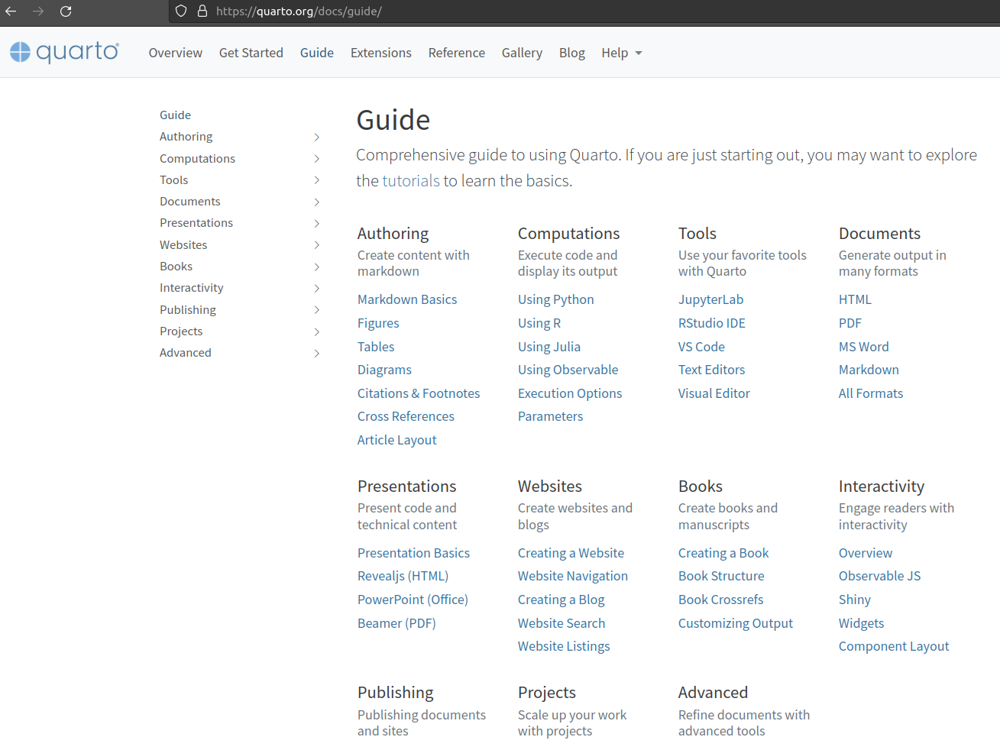

Et RMarkdown dans tout ça?
- Conversion
.Rmd\(\rightarrow\).qmdsimple et lecture de.Rmdvia Quarto CLI possible - Restera à moyen terme supporté par Posit…
- …mais les efforts de développement/nouveautés seront concentrés sur Quarto
Quarto Vs. RMarkdown: les plus
A mettre à la toute fin de la présentation (pas uniquement de cette partie?)
- Quarto plus élégant
- Alterner entre Visual et Source : pratique quand on oublie juste une commande !
- Propositions automatiques dans le YAML header (
CTRL + espace), les “chunk options” - Intéragir avec des notebooks R ou Python exactement de la même manière
- Naviguer facilement entre plusieurs formats
- Inputs différents dans un même document (e.g. site web)
Quarto Vs. RMarkdown: les moins
- Tout nouveau, donc peu d’articles disponibles dans la communauté
L’aide fournie par Quarto.org est tout de même très bien conçue!


En gros, si ce que l’on veut faire n’est pas décrit dans l’aide du site Quarto, très compliqué de mettre en place l’idée. Fouinage et bidouillage ++++
Les ressources en ligne
Merci !